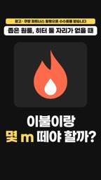
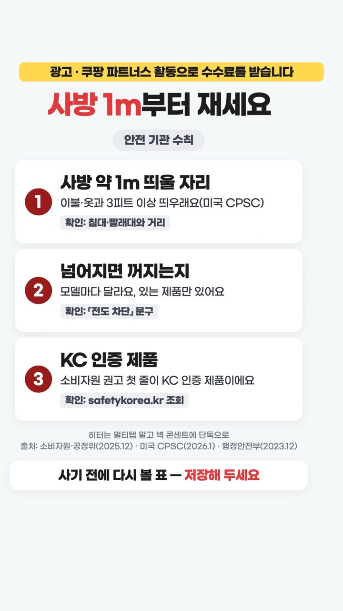

2번 영상
이불이랑 몇 m 떼야 할까?
광고 이 게시물은 쿠팡 파트너스 활동의 일환으로, 이에 따른 일정액의 수수료를 제공받습니다.
영상에서 비교한 3가지예요. 누르면 쿠팡 검색 결과로 가요.
영상 속 비교표 바로 보기 ↓좁은 방 히터, 자리가 문제예요
「이 조건이면 이 사양」 시리즈
이런 집이라면 좁은 방에 히터를 두고 쓴다
사방 1m부터 재세요
안전 기관 수칙
- 사방 약 1m 띄울 자리
- 이불·옷과 3피트 이상 띄우래요(미국 CPSC)
- 확인: 침대·빨래대와 거리
- 넘어지면 꺼지는지
- 모델마다 달라요, 있는 제품만 있어요
- 확인: 「전도 차단」 문구
- KC 인증 제품
- 소비자원 권고 첫 줄이 KC 인증 제품이에요
- 확인: safetykorea.kr 조회
히터는 멀티탭 말고 벽 콘센트에 단독으로 출처: 소비자원·공정위(2025.12) · 미국 CPSC(2026.1) · 행정안전부(2023.12)
